Юридичні консультації
Пояснюємо ваші права та перші кроки дій.
Відстоюємо та захищаємо права кожного пацієнта в Україні. Ми прагнемо, щоб допомога була гідною, безпечною й справедливою, а голос пацієнта — почутим.
— Мета та завдання
Супроводжуємо звернення і фіксуємо порушення.
Пояснюємо простими словами та даємо інструкції.
Консультуємо, готуємо документи й шаблони заяв.
Представляємо інтереси пацієнтів для підвищення якості послуг.
Потрібна консультація? Подати звернення зараз.
Пояснюємо ваші права та перші кроки дій.
Готові документи для НСЗУ, МОЗ та закладів.
Усі звернення захищені й не розголошуються.
Зазвичай відповідаємо протягом 24 годин.
— Підтримка для пацієнтів
Консультації, юридична підтримка, навчання та матеріали — усе, щоб ви впевнено відстоювали свої права.
Пояснюємо права простими словами та даємо перші кроки.
Допомагаємо підготувати звернення й супроводжуємо кейси.

Освітні лекції, вебінари, матеріали для пацієнтів і медиків.

Гіди, інструкції й поради, як відстоювати свої права.
— Про нас
Українська Спілка Прав Пацієнтів — суспільна організація, що об’єднує пацієнтів, їхні родини та захисників прав людини в медичній сфері. Ми працюємо, щоб кожен мав зрозумілу інформацію, юридичну підтримку й прозору взаємодію з медичними закладами та державою.
Усі звернення захищені та не розголошуються; діємо лише з вашої згоди.
Супроводжуємо звернення, фіксуємо порушення та забезпечуємо діалог із медичними закладами й органами влади.
Пояснюємо права й обов’язки простою мовою, надаємо покрокові інструкції.
Відповідаємо протягом 24 годин у робочий час, готуємо заяви/скарги та надаємо зразки документів.
Консультуємо й допомагаємо налагодити догляд та комунікацію з медзакладами.
Напишіть на admin@patients-rights.com.ua або дзвоніть +38 (044) 253-61-94
Безкоштовно пояснимо ваші права та підкажемо перші кроки.
— Наш фокус
Щодня працюємо за шістьма напрямами, щоб права пацієнтів були реальні, а не декларативні.
Забезпечуємо дотримання законодавчих гарантій, супроводжуємо звернення, фіксуємо порушення та допомагаємо відновити права.
Пояснюємо простими словами права і обов’язки, готуємо гіди та інструкції, надаємо перевірену й доступну інформацію.
Консультуємо щодо медичних спорів, аналізуємо кейси, готуємо заяви та супроводжуємо захист у закладах і судах разом із партнерами-юристами.
Беремо участь у формуванні політик у сфері охорони здоров’я, моніторимо дотримання прав пацієнтів та подаємо пропозиції для вдосконалення системи.
Розвиваємо мережу активістів і партнерів, надаємо ресурси та аналітичну допомогу для спільних змін у системі охорони здоров’я.
Проводимо кампанії, медіапроєкти й тренінги про те, чому важливо знати й захищати свої права та як це робити на практиці.
— Зворотний зв’язок
Заповніть форму — безкоштовно пояснимо ваші права та підкажемо перші кроки.